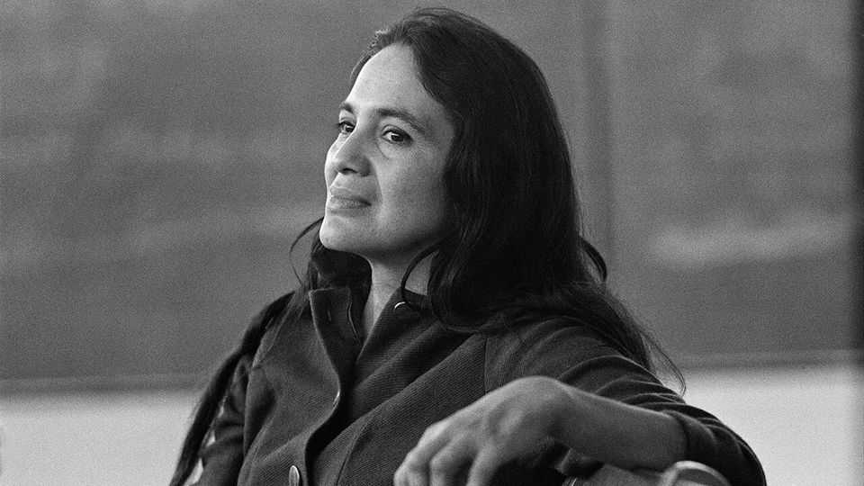

Dolores Huerta fought for farm-workers’ rights—and kept devastating secrets
The labour activist died on October 28th, aged 96

Nov 5th 2026
IN LATE November 1986 the United Farm Workers of America (UFW), a labour union, was ready to celebrate. Earlier that month, then-president Ronald Reagan signed into law the Immigration Reform and Control Act, for which the UFW had spent months lobbying. It offered undocumented immigrants long resident in America a path to citizenship, and gave farm workers who could prove 90 days of employment legal permanent residency. It also penalised employers who knowingly hired undocumented workers, whom the union feared would drive down wages and serve as scabs during a strike.
Shortly before a news conference to mark the legislative win, one of the UFW’s founders, César Chávez, told another founder, Dolores Huerta, that she was needed in Florida. A crisis, he said. So of course, she went, because that’s what she did: go where workers needed her. But when she got to Florida, she found there was no crisis. Nobody was expecting her. “They just wanted to get me out of the way so they could take credit for the work,” she said later. “Straight male-chauvinist trick.”
But hardly uncommon, as one fellow activist recalled: “The assumption was that [Chávez] was the leader, and Dolores was the housekeeper of the movement.” In fact, they founded the union together—though unlike him, she had to balance work with raising her 14 children. With his soulful dark eyes, conversational speaking style and love of the microphone, he was the charismatic front man. But she was the union’s chief negotiator. He could make the speeches; there were also boycotts to organise, contracts to negotiate and people who needed help.
Her mother, Alicia, had a similar streak of dogged practicality. After a divorce, Alicia took her three children from New Mexico to Stockton, California, in the Central Valley, California’s agricultural heartland. After stints as a waitress, cannery worker and restaurateur, Alicia ran a 70-room hotel that welcomed migrant workers, often waiving room fees if they were too steep. Alicia, Dolores recalled, “thought she was their mother”, and gave them curfews, made sure they sent money home and didn’t drink away their paychecks, and invited them to dances so they could meet nice girls and settle down—which many did.
From Alicia, who participated in a cannery-workers’ strike in 1938 and joined civic groups in Stockton, Dolores learned about activism, which was nothing more than helping people who needed help, and speaking up for people who could not advocate for themselves. After training as a teacher, she turned to full-time organising in her 20s, when she joined the Community Service Organisation in Stockton. Its founder introduced her to Chávez, and soon afterward the two founded the group that would, after merging with another farm-workers’ group, become the UFW.
From the start, she held her own. As an “experienced lobbyist”, she wrote to Chávez, “I am able to speak on a man-to-man basis with other lobbyists.” Elected officials learned to fear her. She was “indefatigable” and “unorthodox”, recalled one state senator from California. “Dolores will bring in hundreds of people, and they’ll camp outside your office.”
And although sleeping in a Senate hallway sounds uncomfortable, it was nothing compared with what her union members were used to. They worked in the fields for 16 hours a day. There were no toilets: female workers had to squat behind a towel or a blanket. The only drinking water sat baking in a tank under the sun all day. No health care or unemployment insurance, no recourse if the farm owners cheated them.
So she and Chávez got to work. In 1965 their union, which mainly represented Mexican farm workers, joined 2,000 Filipinos on strike at vineyards near Delano, California. Growers hired scabs and refused negotiations, figuring they could force the workers to back down, as they had before.
But times were changing. Strikers drew support from civil-rights activists including Robert F. Kennedy and Martin Luther King junior. They borrowed tactics from the civil-rights movement, calling for boycotts of table grapes. By 1970 the growers had given in, agreeing to raise wages and recognise the union. Membership in the UFW swelled, and five years later California passed a law protecting farm-workers’ rights to unionise, and making migrant workers eligible for health insurance and other benefits.
Chávez became a hero, giving his name to streets, parks and schools across California and beyond, despite whispers about his authoritarian tendencies, his insistence on personal loyalty and subservience. She kept doing the work, campaigning for women’s rights and encouraging them to run for office, picketing and protesting. Age barely slowed her; a policeman broke her ribs and ruptured her spleen during a demonstration when she was almost 60.
But not until this year did Dolores reveal her deepest secret: Chávez, who died in 1993, had raped her in 1966. He had pressed her into sex years earlier. Two of her children were his. She never spoke up because “I didn’t want to hurt the movement.”
A New York Times investigation found that he assaulted and molested multiple women and girls, some as young as 12. Sexism pervaded his union. Liz Sullivan, a UFW organiser who was raped by two men after an organising meeting, recalled that union members berated her and female colleagues who spoke out about the treatment of women. The male executives had no patience for “women’s lib and all that other bullshit”.
In recent months, statues of Chávez have come down and parks renamed. Some blamed Dolores, too, for keeping quiet and dismissing their complaints about being sexually harassed and assaulted by their colleagues. Ms Sullivan took a more charitable view. She urged people to “see her as a human being, in all her beauty and with all her faults, just like the rest of us”. ■